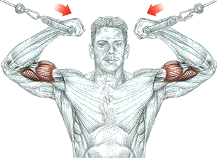
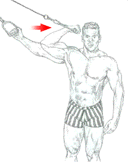
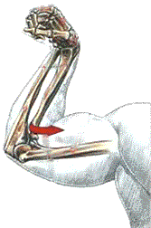
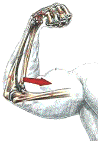

Сгибание рук с рукоятками верхних блоков

Никогда не используйте в этом упражнении слишком тяжелый вес. Сконцентрируйтесь на сокращении внутренней части головки бицепса.
Техника выполнения

Стоя в центре тренажера между рукояток верхних блоков. Рукоятки верхних блоков держать хватом снизу(сверху):
- сделать вдох и согнуть руки, подтягивая рукоятки к голове;
- по окончанию движения сделать выдох.
Это упражнение используют для завершения тренеровки по развитию бицепсов. Оно в основном задействует короткую головку, хорошо ее сокращая и ростягивая. Это упражнение также хорошо тренерует плечевые мышцы и моносуставной разгибатель локтя.

При хвате кистью сверху во время напряжения бицепса усилие распространяется на дистальное сухожилие бицепса, частично поварачивается лучевая кость вокруг своей оси, приводя ладонь в положение пронации.

При хвате кистью снизу во время напряжения бицепса усилие передается на дистальное сухожилие, которое поворачивает лучевую кость вокруг своей оси, приводя ладонь в положение супинации.
источник: "Анатомия силовых упражнений." Фредерик Делавье